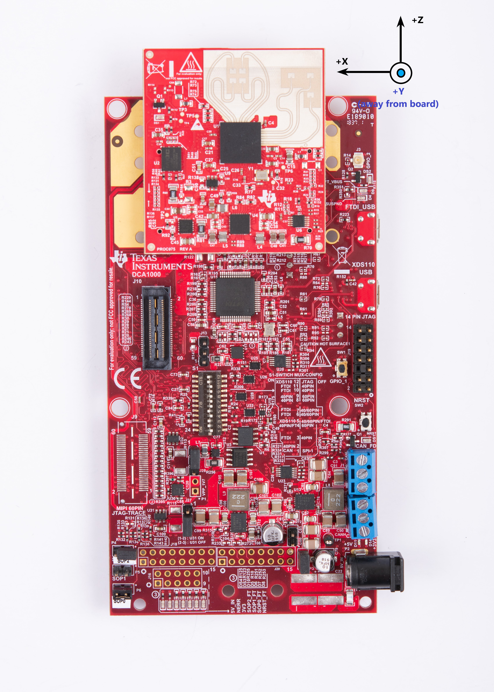
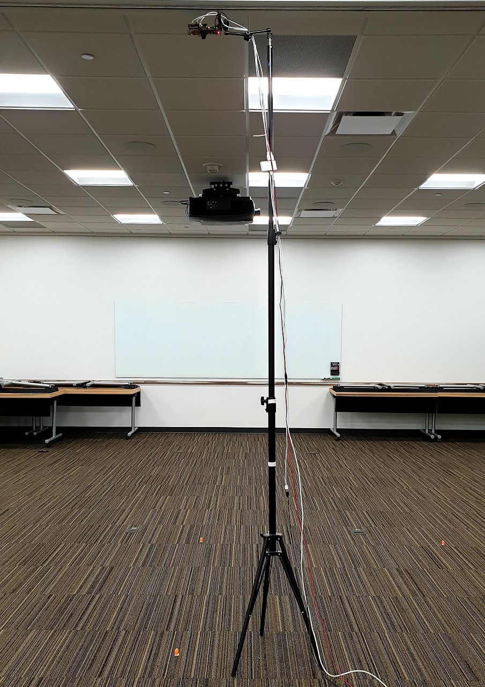
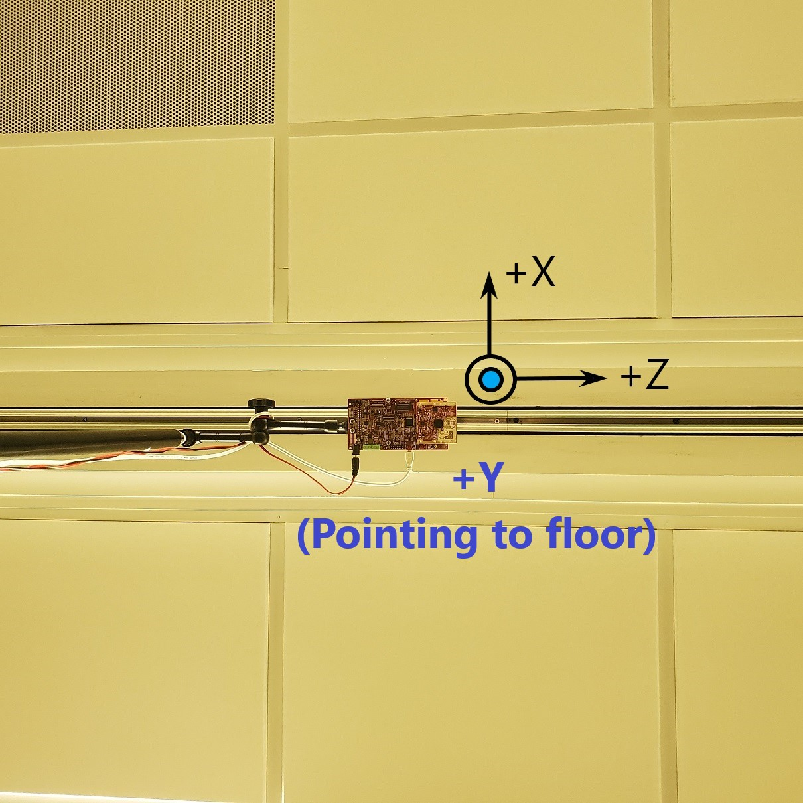
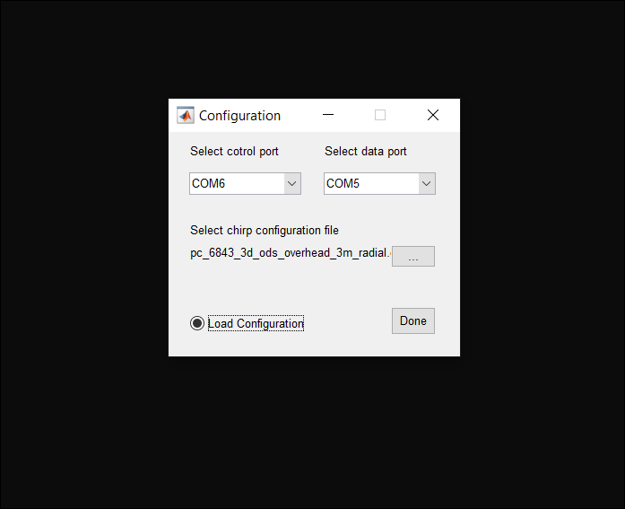
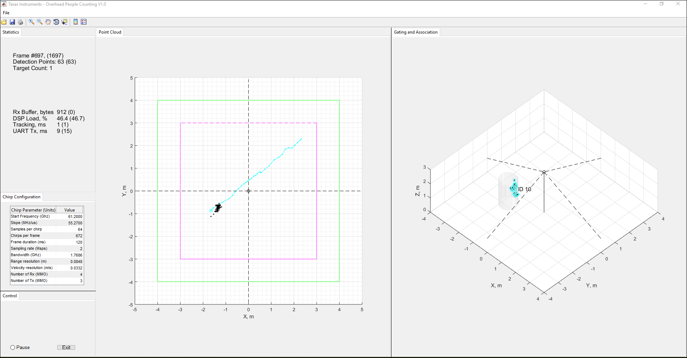
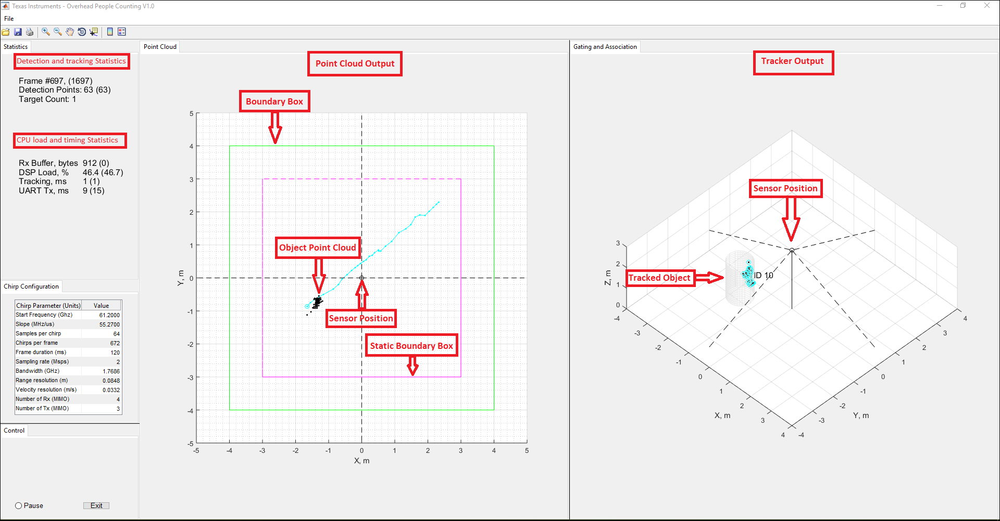

Overview
===========
This lab demonstrates the use of TI mmWave sensors to track and count people using the IWR6843ISK-ODS or IWR6843AOPEVM sensor module mounted in overhead configuration (i.e. directly above the area of interest).
Detection and tracking algorithms run onboard the IWR6843 mmWave sensor and are used to localize people and track their movements.
In this demonstration, localization and tracking is performed upon any moving object in the scene;
With the 3D overhead people counting software running on the IWR6843 chip, the IWR6843ISK-ODS or IWR6843AOPEVM mmWave sensor module outputs a data stream consisting of 3 dimensional point cloud information and a list of tracked objects which can be visualized using the PC based visualizer included in this lab.
This user guide covers the procedures to Flash, Run, and Compile the Overhead mount 3D people counting demo. For details regarding the demo software algorithms and implementation, please refer to the following documents available in the <a href="../../docs/" target="_blank">People Counting Lab docs directory</a>
* <a href="../../docs/3D_people_counting_demo_implementation_guide.pdf" target="_blank">3D People Counting Demo Software Implementation Guide</a>.
* <a href="../../docs/Tracking_radar_targets_with_multiple_reflection_points.pdf" target="_blank">Group Tracker Algorithm Implementation Guide</a>.
<img src="images/pplcount_overview_block2.png" width="450"/>
[[r! IWR6843 ES2.0 Only
This lab is only compatible with ES2.0 version of IWR6843. Check the device version on your IWR6843 using the on-chip device markings as shown below>
1. If line 4 reads `678A`, you have an ES2 device. In this case, this lab is compatible with your EVM.
2. If line 4 reads `60 GHZi`, you have an older ES1 device. In this case, the lab is NOT compatible with your EVM. ES2 IWR6843ISK-ODS boards are orderable from the EVM link above.
<img src="images/iwr6843_silicon_revision.png" width="400"/>
]]
[[r! AoP ES2.0 EVM, Rev F or later only
The IWR6843 AoP version of this lab is only compatible with ES2.0 silicon and the corresponding EVM. Please ensure your EVM is the same as shown below.
<img src="images/iwr6843aopevm.png" width="300"/>
]]
# Requirements
-----------
### Prerequisite 1
[[y! Run Out of Box Demo
Before continuing with this lab, users should first run the out of box demo for the EVM.
This will enable users to gain familiarity with the sensor's capabilities as well as the various tools used across all labs in the mmWave Industrial Toolbox.
]]
### Prerequisite 2
[[r! Latest XDS110 firmware required
The XDS110 Firmware runs on the microcontroler onboard the MMWAVEICBOOST Carrier Card which provides the JTAG Emulation and serial port communication over the XDS110 USB port. We have observed packet loss on the serial port (COM ports) with some versions of the XDS110 firmware which can cause the demo to fail.
The latest XDS110 firmware is installed with the latest version of Code Composer Studio. CCS version 10.1 or later required.
]]
### Prerequisite 3
[[y! Calibrating the demo configuration for your Antenna Module
**NOTE:** This step is not required for a quick initial sanity test of the demo, but the detection and tracking performance will not be optimal without calibrating the configuration for your particular EVM as explained below.
In order to get the best detection and tracking performance, users must run the Out of Box Demo **Range Bias and Rx Channel Gain/Phase Measurement and Compensation** procedure to get the calibration coefficients for their Antenna Module and replace the default coefficients **in one of the following configuration files** corresponding to your antenna module (ODS or AOP), with the values returned by the calibration procedure.
<br>**ODS** - `<INDUSTRIAL_TOOLBOX_INSTALL_DIR>\mmwave_industrial_toolbox_<VER>\labs\people_counting\`<br>`overhead_3d_people_counting\chirp_configs\pc_6843_3d_ods_overhead_3m_radial.cfg` **or** `pc_6843_3d_ods_overhead_3m_radial_low_bw.cfg` if using the low bandwidth configuration
<br> OR
<br>**AOP** - `<INDUSTRIAL_TOOLBOX_INSTALL_DIR>\mmwave_industrial_toolbox_<VER>\labs\people_counting\`<br>`overhead_3d_people_counting\chirp_configs\pc_6843_3d_aop_overhead_3m_radial.cfg` **or** `pc_6843_3d_aop_overhead_3m_radial_low_bw.cfg` if using the low bandwidth configuration
<br>The following command in the chirp configuration file needs to be updated with the calibrated values.
**compRangeBiasAndRxChanPhase `0 1 0 1 0 1 0 1 0 1 0 1 0 1 0 1 0 1 0 1 0 1 0 1 0`** (This is the default command)
The updated command will look similar to the following (but with different values)
**compRangeBiasAndRxChanPhase `0.1044657 -0.11493 0.79419 -0.13123 -0.83478 -0.08484 -0.77560 0.04535 0.72226 0.09491 0.81415 -0.41129 -0.69214 -0.27069 -0.64630 0.20770 0.63818 0.67627 0.69116 -0.90146 -0.43289 -0.81061 -0.48209 0.72995 0.50214`**
To run the calibration procedure, please follow the instructions provided in the Out of Box demo HTML documentation given below:
<a href="file:///C:/ti/mmwave_sdk_03_04_00_03/packages/ti/demo/xwr68xx/mmw/docs/doxygen/html/index.html#Calibration_section" target="_blank">Range Bias and Rx Channel Gain/Phase Measurement and Compensation</a>. The required version of MMWAVE-SDK needs to be installed on your machine to open this link. If this link doesn't open, please copy the address and paste it in a new browser tab or window to open it.
]]
<a name="quickstart"></a>
### Hardware Requirements

Item | Details
--------------------------|-----------------
IWR6843 mmWave Sensor Module | [IWR6843ISK-ODS](http://www.ti.com/tool/IWR6843ISK-ODS) or [IWR6843AOP](http://www.ti.com/tool/IWR6843AOPEVM)
MMWAVEICBOOST Carrier Board | OPTIONAL: [MMWAVEICBOOST Carrier Board](http://www.ti.com/tool/MMWAVEICBOOST) for CCS based development and debugging
| Note: The rest of this document will refer to the above board combination as <b>EVM</b> .
Mounting Hardware | The EVM needs to be mounted at a height of ~2.8-3m in the center of the area of interest, with the sensor directly facing the ground. Please use appropriate hardware e.g. a Tripod*, Adjustable smartphone mount etc to elevate the EVM or attach it directly to the Ceiling to achieve the required mounting.
|
| **Note**: If using a Tripod to elevate the EVM, please make sure that it has an extension arm (minimum 12 - 15 inches) to project the EVM away from the Tripod stem. This is needed to avoid strong boresight reflections caused by the metallic tripod stem directly under the sensor.
|
Computer | PC with Windows 7 or 10. If a laptop is used, please use the 'High Performance' power plan in Windows.
Micro USB Cable | Due to the high mounting height of the EVM, an 15ft+ cable or USB extension cable is recommended.
Power Supply | 5V, 3.0A with 2.1-mm barrel jack (center positive). The power supply can be wall adapter style or a battery pack with a USB to barrel jack cable. Due to the high mounting height, a barrel jack extension cable is recommended to extend the 5v power supply cable.
### Software Requirements
Tool | Version | Download Link
----------------------------|---------------------------|--------
TI mmWave SDK | 3.5.x.x | [Link to Latest mmWave SDK](http://software-dl.ti.com/ra-processors/esd/MMWAVE-SDK/latest/index_FDS.html). To access a previous version of the mmWave SDK scroll to the bottom of the table and click the link under "MMWAVE-SDK previous release". Repeat to continue stepping back to previous versions.
mmWave Industrial Toolbox | Latest | Download and install the toolbox. Go to [Using TI Resource Explorer & the mmWave Industrial Toolbox](../../../../docs/readme.html) for instructions.
MATLAB Runtime | 2019a (9.6) | Exact version required. https://www.mathworks.com/products/compiler/matlab-runtime.html
Uniflash | Latest | Uniflash tool is used for flashing TI mmWave Radar devices. [Download offline tool](http://www.ti.com/tool/UNIFLASH) or use the [Cloud version](https://dev.ti.com/uniflash/#!/)
Quickstart
===========
<a name="physical_setup"></a>
1. Setup the EVM for Flashing Mode
-----------
* For MMWAVEICBOOST + Antenna Module setup: Follow the instructions for [Hardware Setup for Flashing in MMWAVEICBOOST Mode](../../../common/docs/hardware_setup/hw_setup_mmwaveicboost_mode_flashing.html)
* For IWR6843ISK-ODS in Standalone/Modular Mode: Follow the instructions for [Hardware Setup of IWR6843ISK/ODS for Flashing Mode](../../../common/docs/hardware_setup/hw_setup_isk_ods_modular_mode_flashing.html)
* For IWR6843AOPEVM in Standalone/Modular Mode: Follow the instructions for [Hardware Setup of IWR6843AOPEVM for Flashing Mode](../../../common/docs/hardware_setup/hw_setup_aop_modular_mode_flashing.html)
<a name="flash_the_evm"></a>
2. Flash the EVM using Uniflash
-----------
Flash the binary listed below using UniFlash. Follow the instructions for [using UniFlash](../../../common/docs/software_setup/using_uniflash_with_mmwave.html)
[[b! Select from two pre-compiled binary options
This demo supports two different build configurations:
1. The default configuration with un-restricted RF bandwidth to provide high range resolution and tracking accuracy.
2. Low bandwidth configuration with less than 500MHz RF bandwidth to demonstrate FCC compliant people tracking. This has a lower range resolution.
Corresponding to the above, two pre-compiled binaries are provided in their respective folders.
1. Please load the desired binary to evaluate and
2. Make sure that you use the corresponding configuration file as mentioned in the visualizer section below
]]
BIN Image Name | Location
--------------------------|------------
overhead_3d_people_count_demo_default.bin | `<INDUSTRIAL_TOOLBOX_INSTALL_DIR>\mmwave_industrial_toolbox_<VER>\labs\people_counting\`<br>`overhead_3d_people_counting\prebuilt_binaries\default\overhead_3d_people_count_demo_default.bin`
**OR** |
overhead_3d_people_count_demo_low_bandwidth.bin | `<INDUSTRIAL_TOOLBOX_INSTALL_DIR>\mmwave_industrial_toolbox_<VER>\labs\people_counting\`<br>`overhead_3d_people_counting\prebuilt_binaries\low_bandwidth\default\overhead_3d_people_count_demo_low_bandwidth.bin`
**NOTE**: The same binary image works on ODS and AOP modules (using different configuration files corresponding to the EVM type).
3. Setup the EVM for Functional Mode
-----------
* For MMWAVEICBOOST + Antenna Module setup: Follow the instructions for [Hardware Setup of MMWAVEICBOOST + Antenna Module for Functional Mode](../../../common/docs/hardware_setup/hw_setup_mmwaveicboost_mode_functional.html)
* For IWR6843ISK-ODS in Standalone/Modular Mode: Follow the instructions for [Hardware Setup of IWR6843ISK/ODS for Functional Mode](../../../common/docs/hardware_setup/hw_setup_isk_ods_modular_mode_functional.html)
* For IWR6843AOPEVM in Standalone/Modular Mode: Follow the instructions for [Hardware Setup of IWR6843AOPEVM for Functional Mode](../../../common/docs/hardware_setup/hw_setup_aop_modular_mode_functional.html)
<a name="run_the_lab"></a>
4. Run the Lab
-----------
### 1. EVM Mounting and Scene Conditions
The EVM needs to be mounted at a height of about 2.8-3m from the ground and directly above the area of interest with the sensor facing the ground as shown in the picture below.
This can be achieved using a Tripod setup as shown.The aim is to position the EVM so that the area of interest is fully covered within the 3m radial distance from the mounting position of the sensor.
It is very important that the EVM be mounted at the specified height. Mounting at lower than specfied height will result in increased ground clutter. Similarly, mounting at higher than specified height will result in lower signal quality. Both of these will result in poor detection and tracking performance.
The required EVM mounting can be defined as follows:
* Elevated 2.8-3m from the ground (mounting height)
* Projected away at least 12 inches from the Tripod stem using an extension arm (to avoid boresight interference from the Tripod)
* EVM Orientation: Directly above the scene with the sensor facing parallel to the ground
- The EVM X axis is parallel to the length (or breadth) of the room.
- The EVM Z axis is parallel to the breadth (or length) of the room.
- The EVM Y axis is perpendicular to the ceiling pointing straight towards the ground (See EVM image at the top for orientation of axes)
 
### 2. Launch the Visualizer
[[y! MATLAB Runtime Version R2019a (9.6)
**Exact version** R2019a (9.6) required. Download from: https://www.mathworks.com/products/compiler/matlab-runtime.html]]
1. Navigate to `<INDUSTRIAL_TOOLBOX_INSTALL_DIR>\mmwave_industrial_toolbox_<VER>\labs\people_counting\`<br>`overhead_3d_people_counting\gui`
2. Double click to launch **overhead_demo_visualizer.exe**
3. A black console window will appear. After 30-60sec, a Configuration window will appear as shown below.
### 3. Configure Visualizer
[[y! Configuration file must match the binary loaded (default vs low bandwidth)
Please make sure to select the configuration (.cfg) file that matches the target build configuration i.e. use the default configuration file only with the default/un-restricted bandwidth binary and use the low bandwidth configuration only with the FCC compilant low bandwidth binary ]]

1. Select the EVM Control and Data COM ports using the respective dropdowns.
2. Press the "..." button in the configuration dialogue to select the chirp configuration corresponding to your antenna module (ODS or AOP).
<br>**ODS** - `<INDUSTRIAL_TOOLBOX_INSTALL_DIR>\mmwave_industrial_toolbox_<VER>\labs\people_counting\`<br>`overhead_3d_people_counting\chirp_configs\pc_6843_3d_ods_overhead_3m_radial.cfg` **or** `pc_6843_3d_ods_overhead_3m_radial_low_bw.cfg` if using the low bandwidth configuration
<br>OR
<br>**AOP** - `<INDUSTRIAL_TOOLBOX_INSTALL_DIR>\mmwave_industrial_toolbox_<VER>\labs\people_counting\`<br>`overhead_3d_people_counting\chirp_configs\pc_6843_3d_aop_overhead_3m_radial.cfg` **or** `pc_6843_3d_aop_overhead_3m_radial_low_bw.cfg` if using the low bandwidth configuration
3. Check the **Load Configuration** radio control and press **Done** to start the Visualizer.
- The visualizer can also be connected to an already running instance of the Overhead People Counting software on the EVM by keeping the **Load Configuration** radio button un-selected.
- In this mode, the Visualizer does not send the Chirp configuration commands at start-up as the demo software is expected to be already running and configured.
4. The Visualizer window will appear as shown below and **after about 30 seconds**, the visualizer should start showing the Point Cloud and Targets in the respective boxes.

### 4. Understanding the Visualizer Output
The Visualizer windows is divided into three sections as shown in the annotated picture below:
1. **Statistics**: This section included two outputs
* **Detection and Tracking Statistics**: Shows the Running frame count, number of detected points and number of tracked objects resulting from those detected points after gating and association.
* **CPU and Timing Statistics**: Shows the CPU load and timing statistics.
2. **Point Cloud Output**: This window shows the point cloud output from the 3D Capon Beamforming based detection chain running on the device.
3. **Gating and Association**: This window shows the output of the GTrack algorithm running on the device. The Point cloud output from the detection layer is fed to the Tracking algorithm which applies gating and association criteria to group them into objects (track Ids) and performs tracking to track the movement of objects in the scene across frames.
4. **Saved Output**: The Visualizer saves the EVM UART output (point cloud and target information) in a series of files named **fHistRT_`xxxx`.mat** in it's current directory, where `xxxx` starts at 0001 (e.g. fHistRT0001.mat, fHistRT0002.mat and so on). Each file contain 1000 frames of information. These can be re-played in the visualizer offline as described below.

### 5. Re-playing previously saved output
As described in the previous section, the `Overhead_demo_visualizer` saves the EVM UART output (point cloud and target information) in files named **fHistRT_`xxxx`.mat** where each file contains 1000 frames of information. These saved fHist files can be re-played offline either by using the `Overhead_demo_fHist_player` executable or by modifying a flag in the Visualizer source (if running it in Matlab) as shown below:
1. Navigate to `<INDUSTRIAL_TOOLBOX_INSTALL_DIR>\mmwave_industrial_toolbox_<VER>\labs\people_counting\`<br>`overhead_3d_people_counting\gui`
2. Copy the previously saved **fHistRT_xxxx.mat** files and the original chirp configuration used for the data capture in the same directory.
3. Double click on **overhead_demo_fhist_player.exe** to launch it.
4. The utility will read the chirp configuration file **pc_6843_3d_ods_overhead_3m_radial.cfg** and **fHistRT_`xxxx`.mat** files and start playing the captured data. Note that you must have the file **pc_6843_3d_ods_overhead_3m_radial.cfg** in the directory where the `Overhead_demo_fHist_player` executable is run.
5. If you're running the Visualizer using the source in Matlab, you can edit the source file `overhead_demo_visualizer.m` and set **`liveRecording = false`** at the begining of the file and run the script in Matlab. The pre-modified file `overhead_demo_fhist_player.m` is also available in the GUI directory.
<a name="configuration commands"></a>
Modifying Configuration File
-----------
The configuration file includes a set of commands which are used to specify the scene boundaries (i.e. area of interest) in relation to the sensor position and may need to be modified accordingly. These commands and their respective parameters are listed below. Please refer to the EVM mounting image in [Run the Lab section under Quickstart](#run_the_lab) to understand the orientation of EVM axes.
* staticBoundaryBox [-X] [X] [NearY] [FarY] [-Z] [Z]
* This sets boundaries where static points can be used by the tracker and tracks are allowed to become static. Each value denotes an edge of the 3D cube.
* boundaryBox [-X] [X] [NearY] [FarY] [-Z] [Z]
* This sets boundaries where tracks can exists. Only points inside the box will be used by the tracker. Each value denotes an edge of the 3D cube.
* presenceBoundaryBox [-X] [X] [NearY] [FarY] [-Z] [Z]
* The demo supports early presence detection if a pre-configured number of points are detected in the boundary box defined by presenceBoundaryBox. The points also have to meet a pre-defined velocity threshold which is modeled after typical human walking motion. Early presence detection could be useful in applications such as smart lighting, where it may be desirable to turn on the lights as soon as human presence is detected in the area, even before tracks could be allocated.
* sensorPosition [Z] [AzimuthTilt] [ElevationTilt]
* Z - height of sensor from the Floor.
* AzimuthTilt - horizontal rotation of sensor with respect to the back wall, as represented by FarY. This must be set to 0 in this demo.
* ElevationTilt - vertical rotation of the sensor with respect the the ground. This must be set to 90 in this demo.
Customization
------------
For detailed description of the configuration parameters and recommendations related to tuning the parameters, please refer to the following documents available in the <a href="../../docs/" target="_blank">People Counting Lab docs directory</a>
* <a href="../../docs/3D_people_counting_detection_layer_tuning_guide.pdf" target="_blank">3D People Counting Demo Detection Layer Tuning Guide</a>.
* <a href="../../docs/3D_people_counting_tracker_layer_tuning_guide.pdf" target="_blank">3D People Counting Demo Tracker Layer Tuning Guide</a>.
Developer's Guide
===========
Build the Firmware from Source Code
-----------
<a name='reqs'></a>
### 1. Software Requirements
Tool | Version | Download Link
----------------------------|---------------------------|--------------
mmWave Industrial Toolbox | 4.x.x | Download and install the toolbox. Go to [Using TI Resource Explorer & the mmWave Industrial Toolbox](../../../../docs/readme.html) for instructions.
TI mmWave SDK | 3.5.x.x | [Link to Latest mmWave SDK](http://software-dl.ti.com/ra-processors/esd/MMWAVE-SDK/latest/index_FDS.html). To access a previous version of the mmWave SDK scroll to the bottom of the table and click the link under "MMWAVE-SDK previous release". Repeat to continue stepping back to previous versions.
Code Composer Studio | 10.1.1 or above | [Code Composer Studio version 10](https://software-dl.ti.com/ccs/esd/documents/ccs_downloads.html#code-composer-studio-version-10-downloads)
### 2. Import Lab Project
To import the source code into your CCS workspace, CCS projects are provided in the lab at the paths given below.
[[b! Project Workspace
When importing projects to a workspace, the files are LINKED into the workspace. It is important to note that modifying the files in the CCS workspace will also affect the source files.
Practice version control in the case that revisions need to be reverted.]]
* Start CCS and setup workspace as desired.
* Import the project(s) specified below to CCS. See instructions for importing [here](../../../../docs/readme.html#import-ccs-projects-from-the-mmwave-industrial-toolbox-into-code-composer-studio)
Project Name | Location in Industrial Toolbox
-------------------------|-----------------------------
overhead_3d_people_count_68xx_dss | `<INDUSTRIAL_TOOLBOX_INSTALL_DIR>\mmwave_industrial_toolbox_<VER>\labs\people_counting\`<br>`overhead_3d_people_counting\src`
overhead_3d_people_count_68xx_mss | `<INDUSTRIAL_TOOLBOX_INSTALL_DIR>\mmwave_industrial_toolbox_<VER>\labs\people_counting\`<br>`overhead_3d_people_counting\src`
* Verify that the import occurred without error: in CCS Project Explorer both **overhead_3d_people_count_68xx_dss** and **overhead_3d_people_count_68xx_mss** projects should appear.
[[r! Error during Import to IDE
If an error occurs, check that the software dependencies listed above have been installed. Errors will occur if necessary files are not installed in the correct location for importing.
]]
### 3. Build the Lab
[[b! Select from two CCS build configurations
This demo supports two different CCS build configurations:
1. The default configuration with un-restricted RF bandwidth to provide high range resolution and tracking accuracy. This configuration is named **default**
2. Low bandwidth configuration with less than 500MHz RF bandwidth to demonstrate FCC compliant people tracking. This has a lower range resolution. This configuration is named **low_bandwidth**
The same lab projectspec is provided to support both the **default** and **low_bandwidth** configurations. Users can select which configuration to build by setting the Active Build Configuration as shown below.
]]
The DSS project must be built before the MSS project.
1. Select the **overhead_3d_people_count_68xx_dss** so it is highlighted. Right click on the project and select **Build Configurations** --> **Set Active** --> **default** or **low_bandwidth**
2. Select the **overhead_3d_people_count_68xx_mss** so it is highlighted. Right click on the project and select **Build Configurations** --> **Set Active** --> **default** or **low_bandwidth**. Make sure that the same configuration is selected for both DSS and MSS projects.
3. Select the **overhead_3d_people_count_68xx_dss** in **Project Explorer** so it is highlighted. Right click on the project and select **Rebuild Project**. The DSS project will build.
4. Select the **overhead_3d_people_count_68xx_mss** in **Project Explorer** so it is highlighted. Right click on the project and select **Rebuild Project**. The MSS project will build, and the combined metaimage binary will be generated automatically.
5. On successful build, the following should appear:
* **Default:**
* In `<PROJECT_WORKSPACE_DIR>\overhead_3d_people_count_68xx_dss\default`
* **overhead_3d_people_count_68xx_dss_default.xe674** (this is the C67x binary used for CCS based runs)
* In `<PROJECT_WORKSPACE_DIR>\overhead_3d_people_count_68xx_mss\default`
* **overhead_3d_people_count_68xx_mss_default.xer4f** (this is the Cortex R4F binary used for CCS based runs)
* **overhead_3d_people_count_demo_default.bin** (this is the flashable binary used for deployment mode)
* **Low_bandwidth:**
* In `<PROJECT_WORKSPACE_DIR>\overhead_3d_people_count_68xx_dss\low_bandwidth`
* **overhead_3d_people_count_68xx_dss_low_bandwidth.xe674** (this is the C67x binary used for CCS based runs)
* In `<PROJECT_WORKSPACE_DIR>\overhead_3d_people_count_68xx_mss\low_bandwidth`
* **overhead_3d_people_count_68xx_mss_low_bandwidth.xer4f** (this is the Cortex R4F binary used for CCS based runs)
* **overhead_3d_people_count_demo_low_bandwidth.bin** (this is the flashable binary used for deployment mode)
[[b! Note
Please set same Active Build Configuration for both MSS and DSS project.
]]
{{y Selecting Rebuild instead of Build ensures that the project is always re-compiled. This is especially important in case the previous build failed with errors.}}
[[r! Build Fails with Errors
If the build fails with errors, please ensure that all the software requirements are installed as listed above and in the mmWave SDK release notes.
]]
[[b! Note
As mentioned in the [Quickstart](#quickstart) section, pre-built binary files, both debug and deployment binaries are provided in the pre-compiled directory of the lab.
]]
### 4. Execute the Lab
There are two ways to execute the compiled code on the EVM:
* **Deployment mode**: the EVM boots autonomously from flash and starts running the bin image
* Follow the procedure described in the Quickstart [Flash the EVM](#flash_the_evm) section to flash the desired binary.
* **Debug mode**: This mode is used for downloading and running the executable from CCS. This mode enables JTAG connection with CCS while the lab is running and is useful during development and debugging.
* Follow the [CCS Debug Mode Guide](../../../common/docs/software_setup/using_ccs_debug.html), using the binaries listed below:
Debug binary | Location | Connect and load to
---------------|----------------------|----------------------
overhead_3d_people_count_68xx_dss_default.xe674 | `<PROJECT_WORKSPACE_DIR>\overhead_3d_people_count_68xx_dss\default\` | C674X_0
overhead_3d_people_count_68xx_mss_default.xer4f | `<PROJECT_WORKSPACE_DIR>\overhead_3d_people_count_68xx_mss\default\` | Cortex_R4_0
**OR**
Debug binary | Location | Connect and load to
---------------|----------------------|----------------------
overhead_3d_people_count_68xx_dss_low_bandwidth.xe674 | `<PROJECT_WORKSPACE_DIR>\overhead_3d_people_count_68xx_dss\low_bandwidth\` | C674X_0
overhead_3d_people_count_68xx_mss_low_bandwidth.xer4f | `<PROJECT_WORKSPACE_DIR>\overhead_3d_people_count_68xx_mss\low_bandwidth\` | Cortex_R4_0
After executing the lab using either method, launch the visualizer and proceed as described in [Run the Lab section under Quickstart](#run_the_lab)
UART Output Data Format
-----------
The demo outputs the point cloud and tracking information using a TLV(type-length-value) encoding scheme with little endian byte order. For every frame, a packet is sent consisting of a fixed sized **Frame Header** and then a variable number of TLVs depending on what was detected in that scene. The TLVs can be of types representing the 3D point cloud, target list object, and associated points.
<img src="images/packet_structure.png" width="500"/>
### Frame Header
Size: 48 bytes
```Matlab
frameHeaderStructType = struct(...
'sync', {'uint64', 8}, ... % syncPattern in hex is: '02 01 04 03 06 05 08 07'
'version', {'uint32', 4}, ... % 0xA6843
'totalPacketLen', {'uint32', 4}, ... % See description below
'platform', {'uint32', 4}, ... % 600MHz free running clocks
'frameNumber', {'uint32', 4}, ... % In bytes, including header
'subFrameNumber', {'uint32', 4}, ... % Starting from 1
'chirpProcessingMargin', {'uint32', 4}, ... % Chirp Processing margin, in ms
'frameProcessingMargin', {'uint32', 4}, ... % Frame Processing margin, in ms
'trackProcessTime', {'uint32', 4}, ... % Tracking Processing time, in ms
'uartSentTime' , {'uint32', 4}, ... % Time spent to send data, in ms
'numTLVs' , {'uint16', 2}, ... % Number of TLVs in thins frame
'checksum', {'uint16', 2}); % Header checksum
```**Frame Header Structure: name, type, length**
```Matlab
% Input: frameheader is a 48x1 double array, each index represents a byte of the frame header
% Output: CS is checksum indicator. If CS is 0, checksum is valid.
function CS = validateChecksum(frameheader)
h = typecast(uint8(header),'uint16');
a = uint32(sum(h));
b = uint16(sum(typecast(a,'uint16')));
CS = uint16(bitcmp(b));
end
```**validateChecksum(frameheader) in MATLAB syntax**
### TLVs
The TLVs can be of type **POINT CLOUD**, **TARGET LIST**, **TARGET INDEX** or **PRESENCE INDICATION**.
#### **TLV Header**
Size: 8 bytes
```Matlab
% TLV Type: 06 = Point cloud, 07 = Target object list, 08 = Target index
tlvHeaderStruct = struct(...
'type', {'uint32', 4}, ... % TLV object
'length', {'uint32', 4}); % TLV object Length, in bytes, including TLV header
```**TLV header**
Following the header, is the the TLV-type specific payload
#### **Point Cloud TLV**
Size: sizeof (tlvHeaderStruct) + sizeof(pointUnit) + sizeof (pointStruct) x numberOfPoints
Each Point Cloud TLV consists of an array of points. Each point is defined in 8 bytes. The pointUnit struct is used to uncompress each point to five floats (20 bytes).
```java
pointUnit = struct(...
'elevationUnit', {'float', 4}, ... % Multiply each point by this value - used for compression
'azimuthUnit', {'float', 4}, ... % Multiply each point by this value - used for compression
'dopplerUnit', {'float', 4}, ... % Multiply each point by this value - used for compression
'rangeUnit', {'float', 4}, ... % Multiply each point by this value - used for compression
'snrUnit', {'float', 4}); % Multiply each point by this value - used for compression
```**Point Structure**
```java
pointStruct = struct(...
'elevation', {'int8_t', 1}, ... % Elevation in radians
'azimuth', {'int8_t', 1}, ... % Azimuth, in radians
'doppler', {'int16_t', 2}, ... % Doppler, in m/s
'range', {'uint16_t', 2}, ... % Range, in meters
'snr', {'uint16_t', 2}); % SNR, ratio
```**Point Structure**
#### **Target List TLV**
Size: sizeof (tlvHeaderStruct) + sizeof (trackerProc_Target) x numberOfTargets
The Target List TLV consists of an array of targets. Each target object is defined as given below.
```java
targetStruct3D = struct(...
'tid', {'uint32', 4}, ... % Track ID
'posX', {'float', 4}, ... % Target position in X dimension, m
'posY', {'float', 4}, ... % Target position in Y dimension, m
'posZ', {'float', 4}, ... % Target position in Z dimension, m
'velX', {'float', 4}, ... % Target velocity in X dimension, m/s
'velY', {'float', 4}, ... % Target velocity in Y dimension, m/s
'velZ', {'float', 4}, ... % Target velocity in Z dimension, m/s
'accX', {'float', 4}, ... % Target acceleration in X dimension, m/s2
'accY', {'float', 4}, ... % Target acceleration in Y dimension, m/s
'accZ', {'float', 4}, ... % Target acceleration in Z dimension, m/s
'ec[16]', {'float', 16x4}, ... % Tracking error covariance matrix, [4x4] in range/azimuth/elevation/doppler coordinates
'g', {'float', 4}, ... % Gating function gain
'confidenceLevel' {'float', 4}, ... % Confidence Level
```**Target Structure**
#### **Target Index TLV**
Size: sizeof (tlvHeaderStruct) + sizeof(uint8) x numberOfPoints (NOTE: here the number of points are for frame n-1)
The Target Index TLV consists of an array of target IDs. A targetID at index ***i*** is the target to which point ***i*** of the previous frame's point cloud was associated.
Valid IDs range from 0-249.
```java
targetIndex = struct(...
'targetID', {'uint8', 1}); % Track ID
```**Target ID Structure**
Other Target ID values:
Value | Meaning
------------|-----------
253 | Point not associated, SNR too weak
254 | Point not associated, located outside boundary of interest
255 | Point not associated, considered as noise
#### **Presence Indication TLV**
Size: sizeof (tlvHeaderStruct) + sizeof(uint32)
The Presence Indication TLV consists of a single uint32 value to provide a binary indication of presence in the presence boundary box. A value of 1 represents presence detected and 0 represents no presence detected.
Need More Help?
===========
* Search for your issue or post a new question on the <a href="https://e2e.ti.com/support/sensors/f/sensors-forum" target="_blank">mmWave E2E forum</a>
* For details regarding the demo software algorithm and implementation, please refer to the following documents available in the <a href="../../docs/" target="_blank">People Counting Lab docs directory</a>
* <a href="../../docs/3D_people_counting_demo_implementation_guide.pdf" target="_blank">3D People Counting Demo Software Implementation Guide</a>.
* <a href="../../docs/Tracking_radar_targets_with_multiple_reflection_points.pdf" target="_blank">Group Tracker Algorithm Implementation Guide</a>.